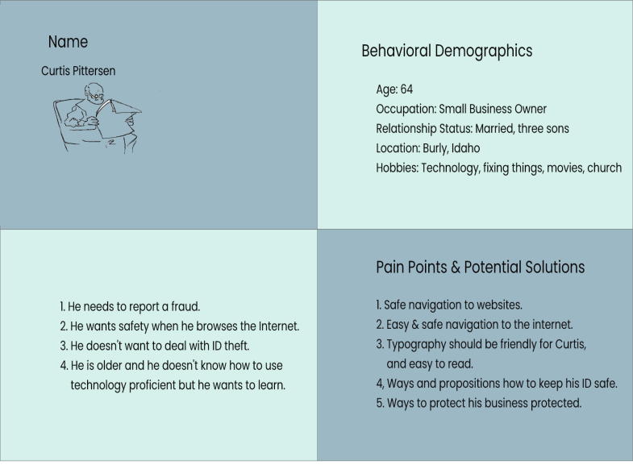
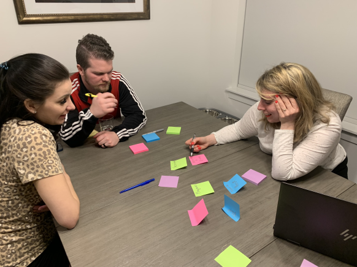
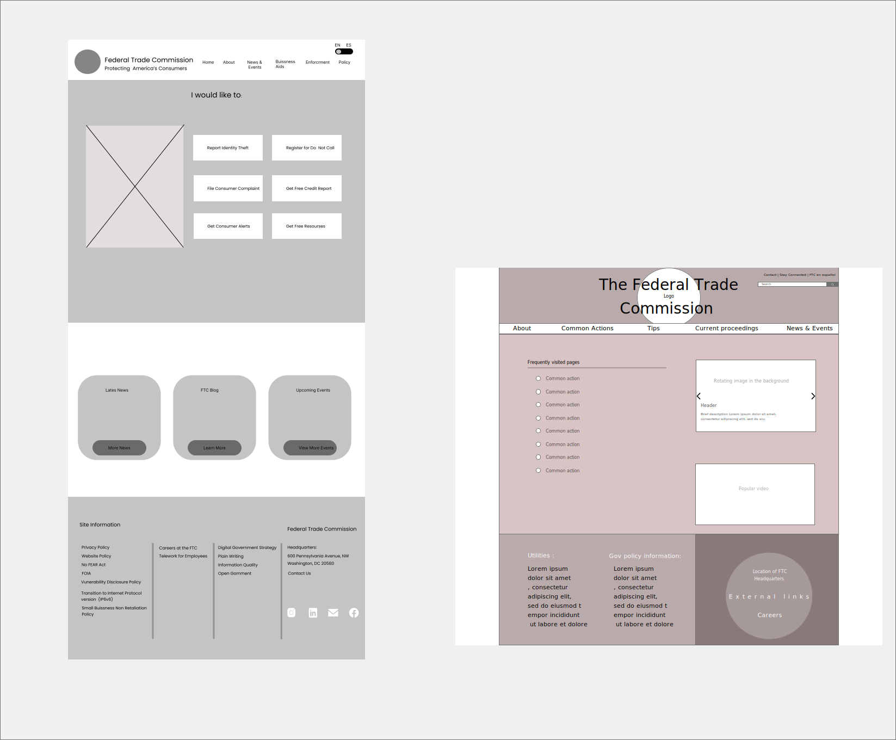

ABOUT THE PROJECT
The Federal Trade Commission (FTC) site is overwhelmed with content. The content has no hierarchical value and is inconsistently laid out. We went to the FTC site to complete an initial analysis. The homepage did not leave a great impression. Bad navigation organization and poor information architecture would make it very difficult for anyone to find the information they needed.
Disciplines
& Tools
& Tools
User Research (Interviews & Surveys) & Analysis, Mobile User Experience Design (UI/UX), Interaction Design, Wireframing, Prototyping, In-person User Testing, Adobe XD.
Team
The team for this project consisted of:
- Marg Papakostas - UX/UI Designer
- Rylee Muir - UX/UI Designer
About Federal Trade Commission
Who Does the Federal Trade Commission Help?
Kurt Petersen is a small business owner. His company does architectural drafting for construction companies. In the past, drawings and technical information was gathered on site and hand delivered. Brian's business is now more remote and sensitive information is now delivered electronically. Brian goes to the Federal Trade Commission's website to get information on how he can increase cyber security to protect his business and his clients documents.
Kurt Petersen is a small business owner. His company does architectural drafting for construction companies. In the past, drawings and technical information was gathered on site and hand delivered. Brian's business is now more remote and sensitive information is now delivered electronically. Brian goes to the Federal Trade Commission's website to get information on how he can increase cyber security to protect his business and his clients documents.

FTC Website Testing
We conducted tests to help us see how users were able to navigate the current site, we tested the desktop version of the site and the mobile site. The test proved our concerns from the heuristic evaluation- analysiss. The testers could not find important information by using the navigation and relied on locating the info they needed through the search function. They wanted the information on the services the FTC provides to be more accessible.
{kind=link}
Helping Users Find Information
In order to redesign the FTC website navigation we first had to define the content already existing on the current site. This task gave us a visualization of how overwhelming the secondary navigation could be for potential users. After defining the content that was on the site we grouped similar pages together. Doing this exercise would help us give more structure to the site. We were able to shuffle the cards to groups that would help the user find those pages more easily.

Since the purpose of the redesign was to improve the information architecture of the Federal Trade Commission website, we conducted Card Sorting to gain a better understanding of the target users' mental models to guide the creation of a revamped information architecture. We created 31 cards to be sorted into categories by users and analyzed the results to formulate a draft information architecture in the form of a Site Map:
Sorting Structure & Sitemap
{kind=link}
{kind=link}
Testing Our Solution and Making Iterations
We first conducted usability tests on homepage and navigation on low fidelity prototypes, after we worked on iterations and user findings. Our next step included the updated high fidelity designs. Our objective was to determine if users found the navigation easy to use and understand. Our other objective was to make sure we were presenting the information in a way that was easy to digest. After conducting our user test we learned that we had a lot we could improve upon.
Low Fidelity Prototypes & A/B Testing

Hi Fidelity Prototypes & A/B Testing

The Solution
Our solution for the FTC site was a redesign of the current website by reworking layout and UI elements to provide important content visual priority. We also organized heavy content into palatable and pleasing web pages and graphics.
{kind=link}
Final Deliverables in Action
Reflection
The Federal Trade Commission redesign project was a an amazing and rewarding journey focused on designing digital interfaces from a user-centered perspective. The entire user-centered design lifecycle was covered in this project, from the User Research to conceptualizing Prototypes and then refining them through User Testing and Iterations and A/B Testing.We made use of several powerful design methods aimed at understanding users and their contexts when using FTC website and used trending industry-standard tools to create design deliverables that effectively communicate our insights.
-Thank You-
UX/UI Design Project
Re-designing the HSU website.
Humane Society Website Revision
UX/UI Design Project
Designing an app that helps low income families to eat healthier at a lower cost.
What's Cookin' App Design
UX/UI Design Project
Designing an app that helps pet owners take better care of their pets with training, socialization, and motivation.
Happy Dog App Design

UX/UI Design Project
Re-designing a government website.